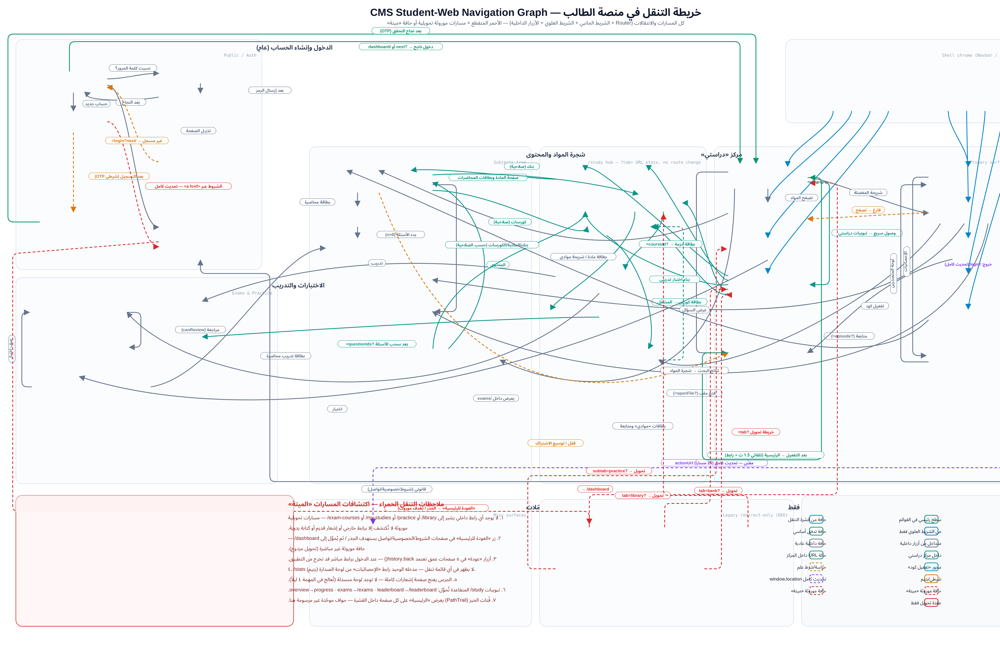

نُفِّذت المهام الثماني كاملة وفق انضباط الليلة: تقصٍّ إلزامي قبل كل تنفيذ، فرع وPR مستقلان لكل مهمة، اختبارات مغلِّقة للسلوك، ودمج موثَّق بأدلة CI — مع القاعدة الحاكمة: أي فشل لا يوقف الليلة، بل يُوثَّق ويُتجاوز. أُغلق في الختام PR تكميلي (#175) لإصلاح حالة اختبار حُدِّدت خطأً في المهمة 8، ليصبح الرصيد النهائي تسع دموجات وصفر انحدار مثبَت في نطاق ما لُمِس.
جدول التسليم النهائي
| # | المهمة | PR | Merge SHA | الاختبارات |
|---|---|---|---|---|
| 1 | خريطة تنقل student-web (تحليل فقط) | #167 | 3aad75c | مستندات فقط — لم يُلمس كود منتج |
| 2 | «تذكّرني» + جلسة دائمة للطالب | #168 | 62ef61d | student-web 71/687 — 18 حالة جديدة |
| 3 | تخزين دون اتصال + واجهة offline + زر بجانب الجرس | #169 | 7306b0d | student-web 72/702 — 15 حالة جديدة |
| 4 | الإشعارات لوحة منسدلة (ربع أعلى-البداية) | #170 | 8803a35 | student-web 73/715 — 13 حالة جديدة |
| 5 | أكواد التفعيل: تفعيل أحادي + نطاق + UX إداري | #171 | c34bd8f | CI أخضر (Backend+Postgres+Security) — 9 حالات API |
| 6 | قفل نطاق الاستحقاق في البحث | #172 | 248f17d | CI أخضر — 6 حالات HTTP على Postgres |
| 7 | أسئلة الوصل: ربط متعدد + أنماط ترقيم | #173 | 0022de0 | CI أخضر — 11 API + 10 admin + 9 student |
| 8 | تنويه بنك الأسئلة + زر «تنويه» عائم | #174 | 598778f | student-web 75/732 — 8 حالات جديدة |
| + | إصلاح fixture اختبار المهمة 8 | #175 | 0252e18 | student-web 75/732 أخضر بالكامل |
الأساس قبل الليلة: student-web 70 ملفاً/669 اختباراً · admin-web 12/87 — كلها خضراء عند 1874184.
مسح شامل لكل مسارات router.tsx (37 مساراً + 7 أسطح داخلية) وكل حواف الانتقال (120+ حافة)، بتصنيف كل سطح: رئيسي / من الشريط العلوي فقط / متداخل / يتيم / موروث-تحويلي. المولّد الحتمي tools/nav-diagram/ يبني الرسم ويُدقَّق هندسياً (صفر تداخل تسميات/عُقد)، والأحمر يعلّم المسارات الميتة والحواف الموروثة. الجدول التفصيلي لكل حافة: docs/student-web-navigation-recon.md.

المهمة 2 — «تذكّرني» حقيقي + جلسة دائمة · PR #168 · 62ef61d
التقصي: موجة 18.2 (D-06) حذفت مربعاً قديماً كان كذبة صامتة (لا ثبات خلفه). الخادم يدوّر رموز التحديث بنافذة انزلاقية 7 أيام — عقدُ جلسة دائمة صادق بلا أي تغيير API.
الأسلوب: طبقة تخزين session-store: الافتراضي مطفأ = sessionStorage الصارم كما هو؛ الاختيار = localStorage + علم ينجو من إعادة التحميل فيكتب التدوير في المخزن الصحيح. الإقفال يمسح المخزنين (fail-closed). كلمة المرور لا تُخزن قط — أثبته اختبار جرد المفاتيح.
الاختبارات: 18 حالة (نمطا التخزين، نجاة «إعادة تشغيل»، أولوية القراءة، إخلاء النسخة القديمة، ثبات التدوير، إقفال فاشل) + تحديث حالة D-06 إلى العقد الصادق.
المهمة 3 — تخزين دون اتصال تلقائي + واجهة صادقة · PR #169 · 7306b0d
التقصي الحاسم: التخزين التلقائي عند العرض موجود أصلاً (ensureLocal عند أول فتح داخل التطبيق)، وجسر Batch-4 يوفر listCached/removeCached — فالتنفيذ المتسق الأدنى بلا أي تغيير أندرويد (حدود D1 وFLAG_SECURE والقشرة كلها بكر).
الأسلوب: لوحة «وضع بدون إنترنت» منزلقة تفتح من زر CloudOff بجانب الجرس مباشرة حتى أثناء الاتصال: قائمة حية للمحفوظات (فتح/حذف لكل ملف)، حالة متصفح صادقة بلا قائمة فارغة مزيّفة، وشريط لاصق عند الانقطاع يدل على الزر.
الاختبارات: 15 حالة — اكتشاف الميزة في المتصفح/التطبيق، تحليل listCached وإقفاله الفاشل، حالات اللوحة وأفعالها، موضع الزر قبل الجرس، وensureLocal التلقائي عند العرض داخل التطبيق مع سلامة مسار المتصفح.
المهمة 4 — الإشعارات لوحة منسدلة · PR #170 · 8803a35
الأسلوب: الجرس صار زر تشغيل (aria-haspopup/expanded) يفتح لوحة مثبتة أعلى-البداية المنطقية (top-0 start-0 — اليمين بصرياً تحت RTL، وصحيحة تلقائياً لو أضيفت لغة LTR)، بعرض نصف الشاشة وارتفاع ~نصفها، وشبه ملء الشاشة على الهواتف. تكافؤ كامل مع الصفحة (تعليم-مقروء، تعليم الكل، actionUrl المقنن) + شارة عدم قراءة على الجرس (99+) + «عرض الكل» يبقي الصفحة الكاملة على بعد نقرة.
الاختبارات: 13 حالة — دلالات الزر وعدم تنقل الفعل الأساسي، التموضع المنطقي، تكافؤ السلوك، إغلاق Esc/الخلفية، وإدارة التركيز ذهاباً وإياباً.
المهمة 5 — أكواد التفعيل: تكامل التفعيل الأحادي + النطاق + UX · PR #171 · c34bd8f
الثغرتان المكتشفتان: (أ) مسار التفعيل اليدوي للمشرف كان يكدّس طلاباً بلا حد على كود خاص مملوك (بلا فحص UsedBy ولا نطاق ولا معاملة)؛ (ب) سباق استرداد مزدوج لنفس الطالب على كود عام يخرج 500 خاماً بدل 400.
الإصلاحات (كلها مفروضة من الخادم): ترجمة تصادم الفهرس الفريد إلى 400 الصادق؛ تحصين مسار المشرف بفحوص النطاق على الكود والطالب + قاعدة الكود-الخاص-لطالب-واحد + مطالبة CAS داخل معاملة؛ حقول ContentScope واسم المادة إضافياً في /profile مع رقائق عربية في واجهة الطالب (أسئلة/محاضرات/فيديو — لا تواريخ فقط)؛ مرشح yearId + نقطة نهاية تفاصيل التفعيلات لكل كود؛ وشاشة الأكواد الإدارية صارت نافذية-المنوال: نموذج الإنشاء نافذة مركّزة، والسطح الرئيسي سجل نظيف بمرشح أكاديمي متسلسل ونافذة تفاصيل لكل كود.
الاختبارات: 6 حالات HTTP + 3 على Postgres حقيقي (رابطة CAS مع تحقق UsedBy، إيدمبوتنسي الطالب نفسه، تعدد الطلاب للأكواد العامة) — dotnet غير متاح في بيئة التنفيذ، فCI هو المنفذ والمُثبِت (Backend + Postgres + Security أخضر).
المهمة 6 — قفل نطاق الاستحقاق في البحث · PR #172 · 248f17d
التقصي: فلتر الخادم للبحث المجمّع سليم وموثوق أصلاً (كل نوع محتوى يُربط عبر المنح النشطة مع مطابقة ContentScope لكل نوع) — والعميل لا يضيف حراسة بل يعرض ما يصله فقط. المفقود: أي اختبار يغلق العقد.
الأسلوب: 6 حالات HTTP على Postgres حقيقي: محتوى بنص مطابق مزروع في مادة ممنوحة وأخرى غير ممنوحة (أي تسرب لا لبس فيه)، خصوصية النطاق لكل من QuestionsExams/VideoAudio/LecturesText/FullSubject، لا منح = قائمة فارغة لا خطأ، والمسودة مخفية حتى داخل المادة الممنوحة.
ملاحظة: المحاولة الأولى على InMemory فشلت (استعلامات Tags تحتاج مزوداً علوائياً) — نُقلت إلى مصنع HTTP على Postgres، وهي نفسها بوابة ترجمة EF التي وُجدت لها أطقم MySubjectsPostgres.
المهمة 7 — أسئلة الوصل: ربط متعدد + ترقيم · PR #173 · 0022de0
الأسلوب: إعدادات حمولة إضافية: AllowMultiMap (افتراضي = السلوك الحالي حرفياً — المحتوى القديم وكل اختبارات W20.5 لم تُمسّ، بمُثبِت اختباري) وPromptNumbering/TargetNumbering (أرقام/أحرف عربية/أحرف لاتينية). في الوضع المتعدد: مجموعة إجابات صحيحة لكل عنصر أيسر (التصحيح بتساوي المجموعات؛ الأهداف تبقى لعنصر واحد؛ أحجام القائمتين قد تختلف كمموهات إضافية).
التنفيذ عبر الأطباق الثلاثة: الخادم (تحقق مُتفرّع + تصحيح بالمجموعات + كشف صادق)، المشرف (صف قواعد على اللوحة: مفتاح + اختيارا ترقيم + مربعات اختيار لكل عنصر في الوضع المتعدد)، الطالب (اللوحة المشتركة نفسها تدير المجموعات بالنقر-النقر وشرائح لكل اختيار مع كشف المجموعة الصحيحة).
الاختبارات: 11 API + 10 مساعد إداري + 9 مكون طالب — CI: Backend + Postgres أخضر.
المهمة 8 — تنويه بنك الأسئلة قبل التدريب + زر عائم · PR #174 · 598778f
الأسلوب (صفر تغيير API): مصدر التنويه = وصف حزمة الأسئلة المُدار من المشرف أصلاً («الحقول الموجودة»)، والتثبيت يركب مخزن تفضيلات الطالب W15.0. ضغط «تدريب» يفتح النافذة ويرحّل التنقل: «إخفاء» لهذه الزيارة فقط (يعود عند الدخول القادم للقسم)، «عدم العرض مرة أخرى» يُثبَّت لكل طالب+قسم على الخادم (قراءة-دمج-كتابة بمفتاح bankNoticeHidden.<id>) مع localStorage احتياطاً عند فشل الشبكة، و«متابعة التدريب»/Esc/الخلفية تُكمل. زر «تنويه» عائم لطيف مثبت أسفل-البداية (منطقي RTL) يعيد الفتح في أي وقت.
الحد الموثق: المشغّل هو «تدريب» تفاصيل الحزمة (مدخل التدريب الأساسي لعدسة السنوات)؛ عدسة «مصنّفة» وباني التدريب مجموعات محسوبة بلا كيان يحمل تنويهاً — تحتاج حقلاً على مستوى المادة فأُرجئت بوعي.
الاختبارات: 8 حالات + إصلاح تالٍ في #175 لخطأ fixture (تمرير undefined في معامل افتراضي مفكَّك أعاد تفعيل نص التنويه) — الملف النهائي 75/732 أخضر حتمياً.
- هذا التقرير نفسه كان الفجوة: انقطعت الجلسة الأولى أثناء مراقبة CI لـ#175 — اكتملت في جلسة استئناف (دمج #175 ثم هذا التقرير MD+PDF). لم يُدَّعَ أي إنجاز قبل وجوده فعلياً على main.
- بندا مهمة 5 المؤجلان بوعي: أداء توليد الأكواد (إعادة تحميل الجدول كاملاً لكل كود) وعمى تحليلات التفعيلات عن أكواد العامة — رُصدا في الـPR ولم يُلمسا احتواءً للمخاطر.
- حد مهمة 8: لا تنويه على مستوى العدسة «مصنّفة»/باني التدريب (يتطلب حقلاً على مستوى المادة).
- مسار OTP (VerifyOtpPage) بلا مربع «تذكّرني» — بقي على الافتراض المتشدد (موثق في #168).
- لا تغييرات Android في الليلة — لم تتطلبها أي مهمة، وبالتالي لم تُشغَّل أطقم assembleDebug.
- CI لا يشغّل student-web vitest أصلاً (فقط admin-web vitest + e2e الطالب) — فكان التحقق المحلي هو المرجع لطلاب الويب، بدل ادعاء تغطية CI غير موجودة.
بعد كل دفعة (9 دفعات فروع + دفعات المتابعة داخل PRs 171/172/175): فُحص git config --list | grep -c github_pat = 0 وgit remote -v | grep -c github_pat = 0 — الرمز لم يُخزن قط في الإعدادات أو الـremotes (الدفع عبر URL أحادي الاستخدام يُغفل بعده)، ولا وجود له في أي ملف مرفوع. آخر فحص بعد دمج #175: نظيف.
المراجع على main
- هذا التقرير: docs/CMS-Night-Mission-Report.md · docs/CMS-Night-Mission-Report.pdf (ومصدر HTML بجانبهما)
- تقصي التنقل الكامل: docs/student-web-navigation-recon.md
- خريطة التنقل: docs/diagrams/student-web-navigation-graph.png · .svg — المولّد والمدقق الهندسي: tools/nav-diagram/